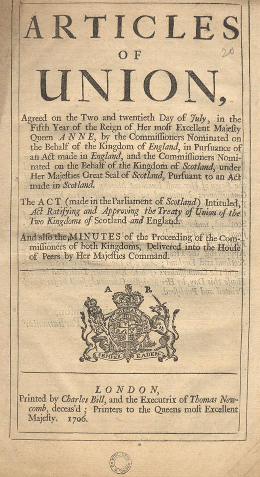
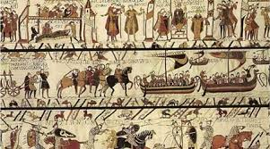
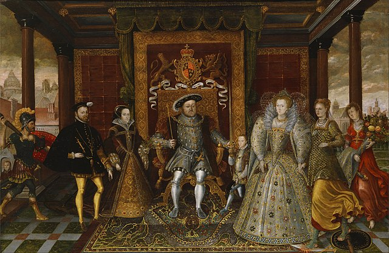
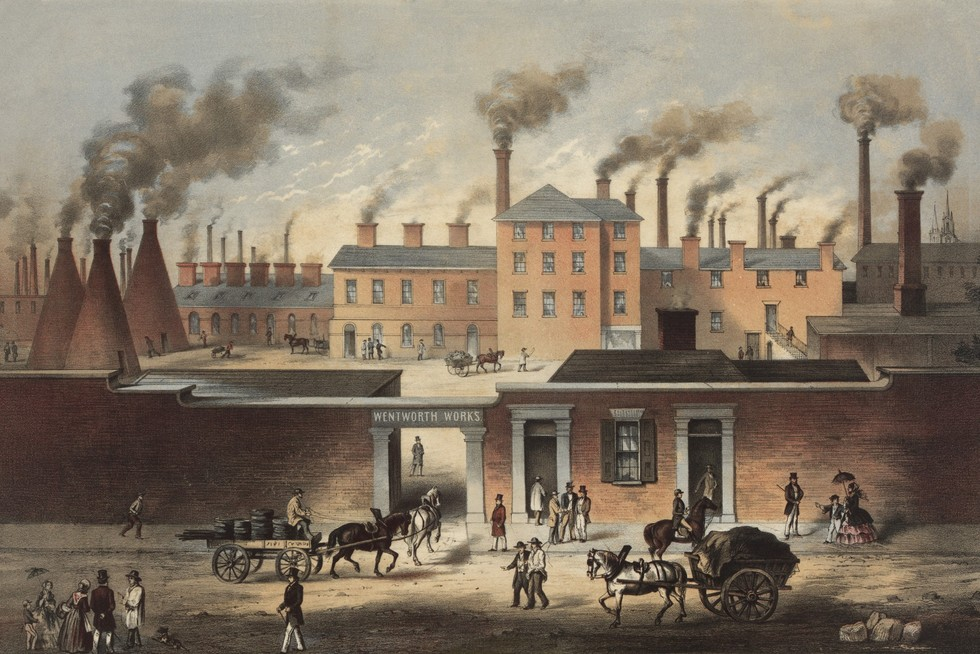
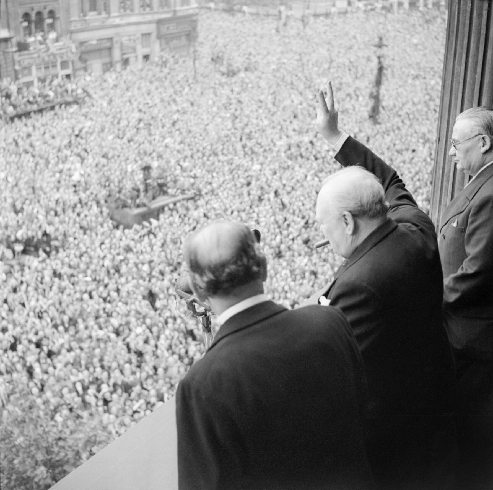

The United Kingdom (UK) is a sovereign country located off the northwestern coast of mainland Europe. It consists of four countries: England, Scotland, Wales, and Northern Ireland. London, the capital, is one of the world’s leading financial and cultural centers. The UK is known for its rich history, having played a significant role in global affairs for centuries, including the establishment of the British Empire and its influence in arts, science, politics, and economics.
Today, the UK is a constitutional monarchy with a parliamentary democracy, where the monarch is the head of state and the Prime Minister is the head of government. The country has a diverse population and is renowned for its historic landmarks, vibrant cities, and contributions to literature, music, and innovation. Although it left the European Union in 2020, the UK remains an important global player, with strong ties to both Europe and the rest of the world.
.jpg)
Ancient and Roman Britain (Before 5th Century)
The earliest inhabitants of Britain were Celtic tribes.
In 43 AD, the Romans invaded under Emperor Claudius, creating the province of Britannia.
Roman rule brought roads, towns, and infrastructure. Hadrian’s Wall was built to protect the northern border.
By the early 5th century, the Romans withdrew as their empire declined.
.jpg)
After the Romans, Germanic tribes — Angles, Saxons, and Jutes — settled and formed small kingdoms.
The 9th century saw frequent Viking invasions, especially in the north and east.
Alfred the Great of Wessex resisted the Vikings and laid the foundation for a unified English kingdom.

In 1066, William the Conqueror defeated King Harold at the Battle of Hastings and became King of England.
Norman rule reshaped the English language, law, and aristocracy.
The Magna Carta (1215) limited the king’s power and planted seeds of parliamentary government.
The Hundred Years’ War (1337–1453) with France and internal conflicts like the Wars of the Roses (1455–1485) defined late medieval England.

The Tudor dynasty began with Henry VII. His son, Henry VIII, famously broke with the Catholic Church and created the Church of England.
Elizabeth I led England into a golden age — defeating the Spanish Armada and fostering arts like Shakespeare’s.
The Stuart dynasty saw tension between monarchy and Parliament, culminating in the English Civil War (1642–1651).
Oliver Cromwell briefly led a republic, but monarchy was restored in 1660.
The Glorious Revolution of 1688 limited royal power and cemented constitutional monarchy.

The Act of Union 1707 united England and Scotland into Great Britain.
Through colonization and trade, Britain built the largest empire in history.
The Industrial Revolution began in the 18th century, turning the UK into the world’s economic powerhouse.
By Queen Victoria’s reign (1837–1901), Britain dominated global politics, culture, and commerce.
.jpg)
In World War I, Britain fought with the Allies and lost nearly a million soldiers.
After a brief interwar boom, World War II began in 1939. Under Winston Churchill, Britain resisted Nazi Germany.
The war ended in 1945, leaving the UK victorious but economically weakened.

Post-WWII, the UK created the NHS (National Health Service) and expanded social welfare.
The British Empire dissolved, with most colonies gaining independence by the 1960s.
The UK joined the European Union in 1973 but voted to leave in Brexit (2016), officially exiting in 2020.
In recent decades, the UK has grappled with globalization, immigration, Scottish independence debates, and its post-Brexit identity.